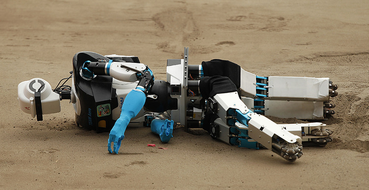

Sun 23 March 2025

We're not 6 months from AGI. We're 6 months from an inflection point where LLMs are being given real-world agency – with all the security and governance implications that entails. Different ways of describing the same phenomena, one grounded in Silicon Valley marketing, the other in operational reality.
The organizational controls and governance frameworks created in response will significantly shape the trajectory of AI development.
Beyond Theoretical Debates
While theoretical debates about AGI timelines continue, a more immediate security concern is emerging: organizations are rapidly deploying LLMs with actual agency in production environments. The focus on capabilities and benchmarks misses the governance reality—systems are being granted permissions to act in ways that create novel attack surfaces and risk vectors.
The Implementation Gap
This rollout reveals concerning patterns across sectors:
- Reduced human oversight in critical decision pathways
- Deployment in environments with complex threat models
- Access provisioning to sensitive infrastructure and data
- AI systems integrated with financial transaction or health capabilities
The consequences won't be confined to research labs—they'll manifest in security incidents, compliance challenges, and operational disruptions that demand immediate responses.
Establishing Governance Frameworks
The institutional responses to these inevitable security incidents will establish lasting governance patterns. In short risk management frameworks will need to recalibrated for autonomous systems
These governance structures—developed under operational pressure—will likely define the security boundaries of AI development more definitively than any capability roadmap.
The coming months aren't about theoretical intelligence thresholds—they're about what happens when AI systems act with increasing autonomy in consequential domains without mature security models. The organizations that approach this transition with rigorous risk assessment methodologies will be best positioned to both innovate and maintain operational integrity.
The real question isn't when we reach artificial general intelligence. It's how effectively we can adapt our security governance to manage the operational, compliance, and risk implications of increasingly autonomous systems acting in our digital infrastructure.
Mon 09 September 2024
It's all just plugging Legos now
The tech industry has experienced a significant shift towards cloud computing and the integration of prepackaged services. This change has fundamentally altered the landscape of software development, moving away from custom builds towards a model of "gluing together" existing components. The era of building everything from scratch is giving way to a more efficient, modular approach that leverages pre-existing cloud infrastructure and services.
The changing role of developers
This shift has profoundly impacted the role of developers and engineers in tech companies. Increasingly, tech professionals find themselves following pre-set playbooks rather than crafting entirely novel solutions. The scope for innovative new programming languages and approaches has diminished as work is now often conducted at a higher level of abstraction. This change represents a significant departure from the traditional software development paradigm, emphasizing integration and configuration over ground-up creation.
Evolution of skills and knowledge
The skills and knowledge required for tech professionals have evolved in tandem with these industry changes. Cloud certifications have become increasingly important, reflecting the need for expertise in specific cloud platforms and services. This shift highlights a move towards more specialized, platform-specific knowledge rather than broader, language-centric programming skills. As a result, tech professionals must continually adapt and update their skillsets to remain relevant in this cloud-dominated landscape.
The new competitive landscape
The competitive landscape in the tech industry has been reshaped by this shift. While many companies have benefited from the move to cloud and prepackaged services, it has also led to a certain commoditization of tech services. Success now often favors those who can execute in the most consistent and efficient manner, rather than necessarily those with the most innovative ideas or the best raw talent. This change has leveled the playing field in some ways, but it also poses challenges for companies trying to differentiate themselves in an increasingly homogenized tech ecosystem.
Looking ahead
Looking ahead, while cloud adoption has reached a saturation point, its influence will remain strong. The introduction of generative AI is poised to further enhance the ability to integrate and "bolt together" various components, akin to the impact Visual Basic for Applications had in its time. While this trend may cover a significant portion of the industry's needs, there will still be opportunities for novel, custom software development, albeit potentially less frequently. The challenge for the industry will be balancing the efficiency and speed offered by these pre-packaged solutions with the need for innovation and customization that drives technological progress.
Sun 05 March 2017
First contact with VR
From the moment I was stood holding a lightsaber in the Star Wars VR demo I knew I was hooked. There was a flood of what I'm going to call 'emotions' to my stomach. I was present in the here and now.
It was a slow start- I've spent the last few years being completely down on VR. Like many others in the software industry you get desensitised to hype because it is constant in the technology industry and rarely means anything. Added to that, I'm old enough to remember Virtual Reality being rubbish and failing to take off the first time around, back in the 90s.
I remember seeing this setup on both Blue Peter and Tomorrows World in the 90s. I never tried it and it never took off.
It was essentially curiosity and FOMO which led to trying out the HTC Vive setup in the ThoughtWorks Manchester office. I expressed mild interest and a colleague offered to give me a demo. And at first the graphic resolution and quality seemed grainier and showed much less definition that I had expected. The fact that I was stood in the office essentially wearing a hood, unaware of my actual surroundings made me feel awkward. The sound was pretty disappointing and the overall impression was clunky.
Unexpected impact
Forty minutes later, I remember leaving the City Tower in Manchester with my mind racing about the possibilities of this technology. I called my wife and told her about the moment the light sabre popped out of the droids head and the storm troopers started running towards me. VR is clunky and expensive and awkward but it allows game designers to create experiences which connect like nothing I've experienced before in gaming. Its not a rational thing at all.
Getting a PSVR
So after my initial VR experience with the Vive I decided to buy the PSVR headset to extend my Playstation 4. I'm in my mid-30s so nobody knows what to get me for Christmas anyway — and I'm very lucky in that I have a lovely family who want to get me gifts even though I'm an adult. So I asked everyone for Amazon vouchers and then threw in a few quid of my own.
In fairness Rez Infinite is a great game
Sadly, Sony were out of stock of PSVRs over Christmas and some vendors were asking £50 over the asking price. As I'm not a 15 year old boy anymore, I wasn't going to pay over the asking price. My PSVR arrived last week almost 2 months after Christmas. Since then I've played some great, wonderfully immersive games such as Rez Infinite and Tethered.
(Actually I want to give a shout to Secret Sorcery, the developers who created Tethered. I was so impressed by the amalgam of really great looking VR, 'small scale graphics', early 2000s Peter Molyneux style weirdness and an interaction scheme that really works. And its a decent strategy game! Looking forward to seeing what comes next from this developer!)
Enter Resident Evil 7
With all that said, I want to make a few comments on Resident Evil 7.
Arggh!
It has made me feel a kind of fear I've simply never felt before.
I've never had any fear response to films. The Blair Witch Project was a complete waste of time as far as I was concerned. Amusing to hear some of the reactions in the cinema and at least I could say I'd seen it — but I was not scared at all. Bored perhaps. Equally things like American Werewolf in London, Carrie, The Exorcist, The Descent or The Thing. I found some of these films quite watchable in themselves, but scary was the aesthetic, not something I actually felt. And I'm quite aware that some people do physically recoil, as I've sat with my screaming wife holding onto me through several of these films.
Equally computer games — I can honestly say that I don't recall ever being shocked or actually scared by a computer game before. I remember there was a game in about 1994 called Creature Shock which surprised me when this tentacle thing attacked. So as a 13 year old I was momentarily overwhelmed by the combination of very advanced graphics for the time and interactivity. It didn't last for long though, as Creature Shock was not really very interactive at all after you'd played it for long.
True terror
Resident Evil made me scream yesterday. From the moment I arrived at the spooky house the game builds a slow sense of creepy tension which then unleashes moments of actual terror and shock (Spoiler: you're not alone in the house). All of a sudden I can actually relate to my wife's reactions when we watched The Descent.
After getting brutally murdered at one point I had to take the headset off and have a sit down. Was I just feeling VR motion sickness, or was it mild shock? Short of getting a taxi to the roughest pub in the city and upsetting some gang dudes there is no way I can replicate this feeling.
A breakthrough for immersive experiences
Psychologically and technologically I can relate to a lot of the reasons why this might work and why it might be the case. I guess a lot of folks who read sites like Medium can too. However I just wanted to share the sheer visceral human reaction this technology creates. Many reviews gloss over or make light of it — but its a big deal.
I can't wait to see where this technology develops next.